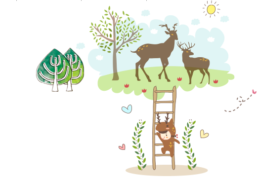
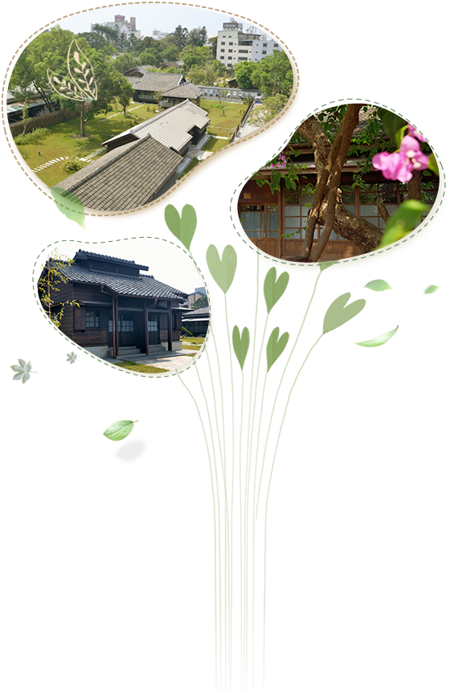

hinoke village
當這一段凝結的老時光，驀然成為林森東路旁鮮亮的風景，這一段歷史成為你我的故事！春風、村風
 阿里山，不僅以壯闊優美的景色享譽全球，更因擁有豐富的森林物產，造就嘉義市成為林業之都的美譽。一條阿里山鐵路，牽引出了一段林業故事的風華起落。待繁華落盡後，沉澱下來的則是一幕幕的回憶。檜町，如今的檜意森活村，成為了這段歷史的見證，回憶的背景。
日治時期，檜町正是基於阿里山林業開發所建立的官方宿舍。因為建材多以阿里山檜木為主，使整個區域仿如檜木村，因此當時名為「檜町」，其後再改名「檜村里」。
關於檜意生活村
全區佔地約3.4公頃，相當於現今嘉義市立棒球場再加上東區體育館的面積。其範圍以林森東路劃分為南北兩塊腹地。北邊即是現今「一心二葉館」坐落的區域，早期為日籍基層職員的宿舍群，而南方一帶則是高級職等的官舍。 檜町在越過一甲子以上的歲月洗禮之後，以日式傳統工法以及盡可能的原材料進行修復，目前保留下來28棟木構造歷史建築。歷經四年的整建，始得重現當年檜村的風華。這裡不僅是台灣最早的林業村，也是保存最完整、範圍最廣之日式官舍建築群。因此，嘉義市政府於2005年將上述建築群登錄為市定古蹟及歷史建築。
市定古蹟營林俱樂部，大約興建於1914年間，屬於當時臺灣總督府營林局的休閒娛樂場所。建築風格仿造歐洲17世紀英國都鐸式建築，室內面積約有75坪。1946年曾作為林管處禮堂，1948年改為忠孝幼稚園，1984年由法務部調查局嘉義縣調查站借用辦公，至1987年歸還，爾後挪為林務局單身員工宿舍。如今名列嘉義市定古蹟，承載林業歷史的記憶。
木村生活
28棟日式木造歷史建築群，從形式上可分為高級主管的一戶建、主管及眷屬的二戶建、眷屬宿舍的四戶建以及單身宿舍的連棟建。不僅規劃錯落有致，深具和風情緻，並且在整個建築聚落中，設有公共澡堂的湯屋和招待所，滿足生活機能與商業功能的雙重結合，重現當年建村時的布局巧思。
在歷經四年修復與規劃的檜意森活村，如今得以重現舊時日式宿舍的風貌，帶領我們一窺早期阿里山林業開發生活史。其不僅具有保留歷史建築與古蹟的文化意義，更是深具地方文史資產的教育功能。因此，當我們開啟拉門的剎那，靜謐中恍然時空穿越，在撲鼻的檜木香氣中，一腳踏進了歷史－先人的生活環境－之中。當我們輕緩地走過泛黃的文化積澱後，新綠的生命脈動將在心中綻放，讓歷史繼續傳承，故事不停創新。
村之記憶募集
檜町，因應阿里山林業開發而誕生的村落，歷經時代演變的遞嬗，曾經有過的喧囂繁華、雞犬相聞的年代，隨著時間流逝而改變、湮沒。如今，當我們漫步在「檜意森活村」中的各個角落時，檜木香氣依舊襲人，只是記憶幽隱。
因此，我們將尋訪老歷史，希望聯繫這方土地的記憶。
未來，我們將創造新故事，共同延續這方土地的情感。
「檜意森活村」竭誠邀請您的參與，響應募集檜町的歷史器物、照片或時代記憶中的口述歷史，一起譜寫消逝的記憶、未完成的故事。